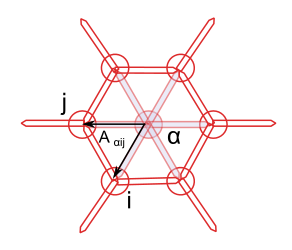

Intro
So I’m giving a talk at EuroScipy at the end of the summer (hooray!). It is based on the code I developed to model fold formation in the drosophila leg imaginal disk, which was published earlier this year. A lot as moved since I submitted the abstract. So here are some thoughts on what happened, and what motivated the switch to a new, more generic library.
Here is the submitted abstract (I’m all about code re-use)
Biological tissues, and more particularly epithelia are very particular kinds of material. Not only do they behave like solids and liquids at the same time (think shaving foam), they are also governed by the behavior of their constituent individual cells. Biological processes (a bunch of incredibly complex chemical reactions) and physics are intertwined so that complex forms emerge from initially smooth tissues.
Along advanced imaging techniques and genetic manipulation of model organism, biophysical modeling is key in understanding these shape changes, or morphogenesis. We studied the role of programmed cell death, or apoptosis in the formation of a fold in the fruit fly pupae (an intermediate stage between larva and adult). In a recently published article we demonstrated that apoptotic cells had an active role in shaping this fold (which will later become a joint in the adult fly’s leg). Cells die on a ring around the socket shaped tissue (one cell thick, and about 200 µm in diameter), they contract and pull on their neighbors, initiating changes in the tissue properties.
In this presentation, I will describe how we use python to develop a numerical model of this epithelium. The leg-joint module is based on Tiago Peixoto’s graph-tool library, and uses SciPy optimization routines to perform the gradient descent at the core of the dynamical simulation. The following topics will be discussed:
Performance: can we go from 24 hrs per simulation to less than 1? The pure python vectorization and BoostPython/CGAL routes.
Future plans: towards a biological tissue physics engine.
The code is showcased in a series of Jupyter Notebooks that can be browsed here.
The three points above deserve some developments, so I’ll do 3 posts, not in the original order, though.
- Performance - this post
- Future plans - not so future anymore - next post
- Visualization (where I’m least advanced) - the third one
The pitfalls of research driven developments
The leg_joint code was developed while our understanding of the biology was
progressing at a fast pace, as Magali’s team accessed new genetic tools and
gradually improved the fluorescence microscopy images of the drosophila’s leg
disk. That left little room for API design, or optimization. I went for results
straight ahead, tried to document and test, though not enough, but my time was
well spent in maths (that bloody gradient), biology and getting correct figures.
For the published version, getting a simulation of the full fold formation process takes about 24 hours on a single core, which is not sustainable …
Optimization
So I started refactoring once the paper was published. The performance bottleneck was quite obvious: the gradient descent code was called locally (only on a group of cells) a lot of times to mimic a global epithelium relaxation, and this code contained explicit loops over each cell of the global patch to update geometry and gradients at each optimization step. This is bad, but was easy to write. It also made whole tissue optimization depressingly slow. As a good SciPythonista (if that’s a thing), I started looking at vectorization strategies.
I started using graph-tool for its efficient management of dynamic graphs and
graph drawing capacities. In this library, values attached to vertices and edges
can be accessed as Numpy arrays through the get_array attribute of the
PropetyMap
class. But as the documentation warns:
The returned array does not own the data, which belongs to the property map. Therefore, if the graph changes, the array may become invalid and any operation on it will fail with a
ValueErrorexception. Do not store the array if the graph is to be modified; store a copy instead.
Furthermore, you can only set the ‘true’ values of the property map for the all
array at once. Said otherwise, you can’t use fancy indexing to set values of a
given variable (e.g. the x coordinate) of a subset of the graph’s vertices
directly, you have to modify a copy of the array and feed it back to the
PropertyMap.
You can access a subset of the graph through filtering, i.e. defining a binary mask over the network. But filtering is not the same as indexing, for example you can do this with indexing:
import numpy as np
a = np.arange(4) + 2
b = a[0, 1, 3, 3, 3]
print(b)
>>> [2, 3, 5, 5, 5]
But you can’t tell a mask to repeat a value, and that was exactly what I needed
to compute my epithelium geometrical properties. With PropertyMaps, you can
get values from fancy indexing, but setting them back is more complicated,
due to the rather convoluted way graph-tool mirrors the underlying C++ data and
the property map .a attribute, that returns a numpy array. Of course
graph-tool was not meant for that kind of computation, it’s focus is on graphs’
topology, not geometry or calculus.
The cell’s area is a good example for the type of computation I was trying to run. It is computed as the sums of the cell’s sub-faces areas, which are themselves half the norm of cross product of two sub-face vectors:

The area of the sub-face is \(A_{\alpha ij} = || r_{\alpha i} \times r_{\alpha j} || / 2\).
Cross product works just fine with numpy 2D arrays, but to compute it, I need to
repeat each vector twice for each adjacent face, sum over the cells, and put
this back in the property map holding the cell area, for future use. Hence my
indexing issue with graph-tool property maps. This motivated the passage to
pandas DataFrames to do the geometrical computing. Fancy indexing is what
pandas is made for, isn’t it?
Here is an outline of the strategy I used to gather the data from the graph’s property maps and turn them into DataFrames:
-
First find all the triangular faces in the graph, using graph-tool’s
subgraph_isomorphism, and get the indices of the 3 vertices (two junctions and a cell). -
Use this as a
MultiIndexto instanciate aDataFrameholding a copy of the relevant data. -
Do the maths.
-
Feed back the data to the graphs’ property maps.
Thanks to graph-tool, the first point is easy to achieve, and quite fast (like some seconds for a full 2000 cells simulation):
def get_faces(graph, as_array=True):
'''
Retrieves all the triangular subgraphs of the form
1 -- > 2
^ ^
\ /
0
In our context, vertex 0 always corresponds to a cell
and vertices 1 and 2 to junction vertices
Parameters
----------
graph : a :class:`GraphTool` graph instance
as_array: bool, optional, default `True`
if `True`, the output of `subraph_isomorphism` is converted
to a (N, 3) ndarray.
Returns
-------
triangles: list of gt.PropertyMaps or (N, 3) ndarray
each line corresponds to a triplet (cell, jv0, jv1)
where cell, jv0 and jv1 are indices of the input graph.
'''
tri_graph = gt.Graph()
## the vertices
verts = tri_graph.add_vertex(3)
## edges
tri_graph.add_edge_list([(0, 1), (0, 2), (1, 2)])
_triangles = gt.subgraph_isomorphism(tri_graph, graph)
if not as_array:
return tri_graph, _triangles
triangles = np.array([tri.a for tri in _triangles], dtype=np.int)
return triangles
This works thanks to the definition of the graph edges, with edges from cell center to junction vertices always oriented outwards, such that the triangular pattern uniquely defines the set of faces.
The triangles array then served as a MultiIndex for a pandas DataFrame
called faces. Each of the vertex index was repeated as many times as
necessary, and it was then easy to pick the correct data to compute the desired
crossproduct, and do sums for each cells (something like
faces['sub_areas'].sum(level='cell')).
According to git log, it took me about three weeks to vectorize completely the
geometry and gradient computation, but the effort was worth it, with a time gain
about two orders of magnitudes (unfortunately, I didn’t document properly the
successive gains in computing time), close to the 24 to 1 hours goal I bragged
about in the abstract, at least on a relatively simple test case. At that point,
“all” that was left was the fourth point of the list above.
Refactoring
But then… I spent the next two months (!) trying to integrate back my new
faces DataFrame within the general framework. The main hurdle comes when the
graph topology changes, which creates indexes mis-alignments and synchronization
nightmares. Maybe it’s my fault for not doing this at the proper level, or not
specifying things more clearly; alternatively, graph-tool is not that adapted to
3D geometry computations and it’s time for some new API design.
So at the beginning of May, I decided to reboot the project, and started working on tyssue. As this post is already too long, I’ll discuss this on the next one.
Comments
comments powered by Disqus